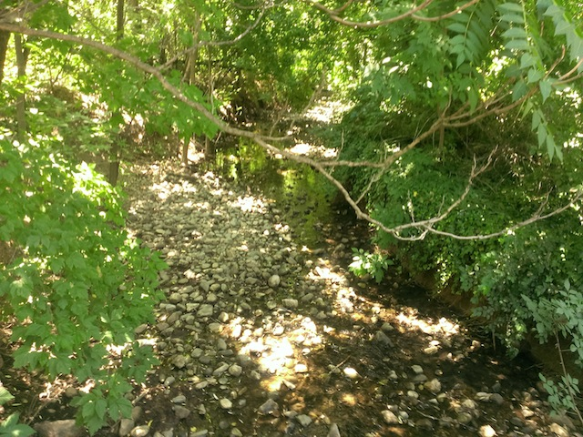

| |
Vegas/Lagoon Road Trip
Las Vegas Lagoon
All right. This is just unbelievable. 24 hours ago, I was just expecting to be on a day trip, and now here I am in the middle of Utah. Throughout the entire drive, I kept saying to myself "Utah is very pretty. Why am I in Utah? X1000".
Ok. I know why I'm in Utah now. I can't belive I'm back so soon after my last visit.
WE MADE IT BACK TO LAGOON!!! =)
Though it may not look like anything amazing, Lagoon is one of the best theme parks ever which is why we made such an effort to come here at the last minute.
It feels so good to be riding Wicked again.
Just relaxing and taking the Skyride across Lagoon.
"Hey everyone!!! Check it out!!! We made it to Lagoon in a single night!!!" =)
Come on now. Kick the fountain.
These Top Scans are simply amazing. It's like a sit down version of Tango. PLEASE BUILD MORE OF THESE!!!
 We were gonna ride Beach Boys The Ride, but it broke down when we came back to ride it. Oh well, we'll be back next year.
We were gonna ride Beach Boys The Ride, but it broke down when we came back to ride it. Oh well, we'll be back next year.
Where are we again? =)
(Photo by Dylan Roberts)
All right. Lets check out Pioneer Village cause that has got to be one of the coolest areas in any park.
Love the setting of Lagoon.
No Cody. Don't steal the park's antique camera. Tsk Tsk.
Umm, I'm gonna need some royalty payments if you're gonna put my teeth on display Lagoon. Pay up.
Hey look Alisa. We found your room (We would've told you about coming if it wasn't for us deciding to go at the last minute in Las Vegas).
Lagoon is great for families of all different species. =)
Get in the time machine...I mean phone booth Cody.

Ah man. The river from last year dried up. =(
 Quick reminder. This place has the best rapids ride I've ridden (in the United States). So yeah. I gotta ride it.
Quick reminder. This place has the best rapids ride I've ridden (in the United States). So yeah. I gotta ride it.
 Warning. You CAN NOT escape that waterfall. IT WILL get you wet. Don't even try to fight it.
Warning. You CAN NOT escape that waterfall. IT WILL get you wet. Don't even try to fight it.
 Anal impalement on the Pirate Ship. Wow, I guess Lagoon is even more European than I thought. =)
Anal impalement on the Pirate Ship. Wow, I guess Lagoon is even more European than I thought. =)
Hey, if you wanna see some exotic animals, just ride the train and you'll see lions and tigers and bears. Oh my.
Exotic? What the hell are you talking about? Don't you know about all the camels roaming around Utah?
 Holy Crap!! Lagoon is such an awesome theme park that I actually forgot there were coasters here for a while. Well lets get riding.
Holy Crap!! Lagoon is such an awesome theme park that I actually forgot there were coasters here for a while. Well lets get riding.
 Hey, it may not be the best wooden coaster ever, but its a fun old fashioned underrated ride.
Hey, it may not be the best wooden coaster ever, but its a fun old fashioned underrated ride.
When my wife says to bring home the bacon, she really means it.
 Still the strongest Wild Mouse ever ridden by Incrediblecoasters, and that's incuding all the crazy European Mice.
Still the strongest Wild Mouse ever ridden by Incrediblecoasters, and that's incuding all the crazy European Mice.
 Love how they still have these classic intense Schwarzkophs here, like Collosus which'll literally knock you down if you ride alone.
Love how they still have these classic intense Schwarzkophs here, like Collosus which'll literally knock you down if you ride alone.
Aw man. The enterprise is closed today. Sorry Dylan, guess you won't get to ride your first Enterprise today.
But at least we got on the Rock-O-Plane today, which we really got flipping to the point that it almost made Cody R. nauseous.
 As if Lagoon wasn't awesome enough, they're building an awesome funky Hyper-Eurofighter-Elevator-Custom coaster for 2015. So now we have another reason to come back in 2015 (as if we needed yet another reason to return). =)
As if Lagoon wasn't awesome enough, they're building an awesome funky Hyper-Eurofighter-Elevator-Custom coaster for 2015. So now we have another reason to come back in 2015 (as if we needed yet another reason to return). =)
Ooh. Track for the new coaster.
Meh, we can skip the S&S Towers today. They were pretty weak last time I was here anyways.
Love these mountains right by Lagoon.
 And of course, we have to get on Jet Star 2 today, cause come on. It's an awesome ride.
And of course, we have to get on Jet Star 2 today, cause come on. It's an awesome ride.
Don't underestimate this ride. It packs a powerful punch.
Hey, I don't remember there being Flyers here last year. Well, they're really good and that's all that matters.
Hey, it may not be nearly as pretty as the Air Race at Tivoli Gardens, but at least it it's still an awesome ride.
And of course, we have to end the day with another ride on Wicked cause yeah. That ride is awesome.
We ended the day with dinner at In 'N' Out before the suicide night back to Ventura. Yeah, it's not unique (to us at least since we live in So-Cal, but to most of you, this would be), but at least we got to try an In 'N' Out in Salt Lake City. The Suicide Night back was really...interesting. I would say to never do two Suicide Nights back to back, if it wasn't for the fact that we already had done two Suicide Nights back to back successfully. But what I think really made that one work was two different things. #1. I actually got REM Sleep the night before on that one. I didn't get much sleep on the Suicide Night from Las Vegas to Jerome last year, but when we switched, I at least got some REM Sleep and managed to get through a sleep cycle which really kept me awake that whole day. This time, I was in this state of funkiness where I was too tired to keep my eyes open and couldn't drive, but unable to lose conciousness and actually sleep, hearing everything Cody and Dylan were saying to each other, which really screwed me over. #2. We had a much more relaxing day last week. I got to rest during part of the long drive last time. So I was resting in Tuscon and New Mexico last year, making it much easier for us to switch off in El Paso and for me to really go at it all night across Texas. This time, I was at a theme park, using a lot of energy, that combinded with no REM sleep the night before put me in bad shape. Luckily I did take a power nap in the begenning and did manage to make it all the way from Fillmore UT (there's no Tar Creek there) to Primm NV. I was supposed to make it to Baker, CA, but knowing my body, that just wasn't going to work. On only an hour of sleep, I felt GREAT going from Fillmore, UT to Mesquite, NV. Going from Mesquite to Las Vegas, I got tired and knew that I most likely wasn't gonna make it to Baker. And then going from Las Vegas to Primm, AHH!!! THAT HURT SO F*CKING BAD!!!! I would've most likely crashed in the Valley of Death if I tried to make it to Baker (Note. Listen to your body. Not crashing your car is more important than making it to your destination in time. Seriously, listen to your body and don't be a f*cking idiot). So Cody and I switched in Primm much to his dismay. He made it to Barstow before he just COMPLETELY CRASHED after doing a majority of the Suicide Night the night before and also not getting any REM Sleep. I needed another hour of sleep before I could go for another round. So it looked like we were about to spend an hour at a truck stop in Barstow, well Cody R to the rescue. He took over and managed to get us all the way back home despite my offer to switch in Palmdale and finish us off. I've always thought that if we got 3 people to do a Suicide Night, it'd go flawlessly, and yeah. It does work better even though Cody and I were trying to do all the dirty work of the Suicide Night so that Dylan and Cody R. could relax and sleep in the car, but at least it worked out for a spontatneous last minute Suicide Night to Lagoon, which was TOTALLY worth it. I'd love to do more random spontaneous trips, except...money. Gotta budget for 2015. Grr. Dammit!! Oh well. Lagoon is awesome, I'm glad I got to go last year, I'm glad Cody R. and Dylan got to join us on a crazy Incrediblecoasters Road Trip, and I'm so looking foreword to going back to Lagoon next year.
Home
|
{kind=link}